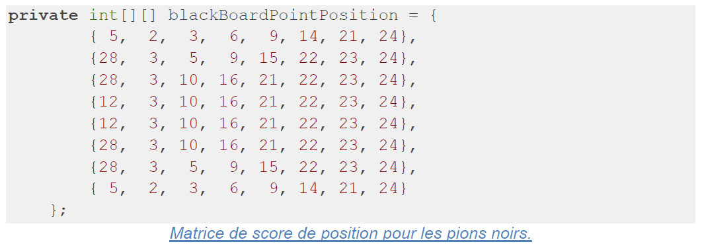

Project Information
- Category: Artificial Intelligence
- Language: Java
- Participant(s): Jolan Thomassin, Manoël Nohra
- Project Date: 2023
Game Rules (Breakthrough)
Breakthrough is a strategy board game created by Dan Troyka in 2000. It won the 8x8 Best Board Game Design Contest and has some similarities to Checkers, but the strategy is different.
The objective of the game is to reach the opponent's starting row, which is farthest from the player. This means the white player must reach the 8th row, while the black player must reach the 1st row to win the game.
Introduction
I present in detail the design, implementation, and results of my artificial intelligence program for board games. Our goal was to create an AI capable of making informed and effective decisions in a complex game environment.
Alpha-Beta Pruning
Alpha-beta pruning is a technique used in tree search algorithms, such as Minimax, to reduce the number of nodes evaluated. It works by eliminating branches of the search tree that do not contribute to the final decision. This is done using two values, alpha and beta, to track the minimum and maximum values respectively, allowing branches that cannot improve the current outcome to be eliminated. This significantly reduces the computation time needed to find the best action to take.
Evaluation Function
Our evaluation function is divided into three main points:
- Calculating the number of pieces on the board and assigning points based on the surplus or deficit compared to the opponent.
- Assigning points to each square on the board, with a 50% bonus for squares containing secure pawns.
- Evaluating positions based on criteria such as the strategic importance of pieces, their mobility, advanced positions, and direct threats to opposing pieces.
We also use a position score matrix to assign points to each square on the board, favoring solid defense on important positions while encouraging advancement toward the front and center. Finally, we added a 50% bonus for secure pawns, further strengthening our defensive strategy and improving our program's control of the board.
MinMax Tree Depth and Average Computation Time
Our MinMax algorithm reaches a depth of 7 in the search tree, which often results in time overruns. At depth 6, some time overruns occur, but at depth 5, they are rare, indicating that this depth is more reasonable for obtaining satisfactory results.
The depth of the tree is static and depends on no parameters other than the pre-assigned depth value. However, the defined time limit has a direct impact on the depth reached in the search tree.
The average time required to evaluate our moves is 4.2 seconds at a depth of 5. We continue to seek ways to optimize our algorithm to further improve these performances.
We initially chose a final depth of 7, but after the tournament, we would likely consider lowering it to 5 to ensure a more comprehensive exploration of the tree.
We explored an adaptive depth choice by estimating a different depth based on the number of remaining pawns in play, but this approach did not yield the expected results.